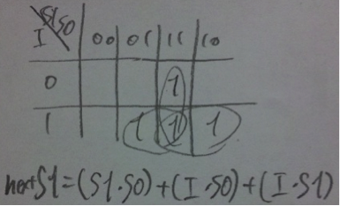
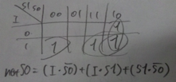
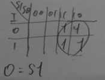
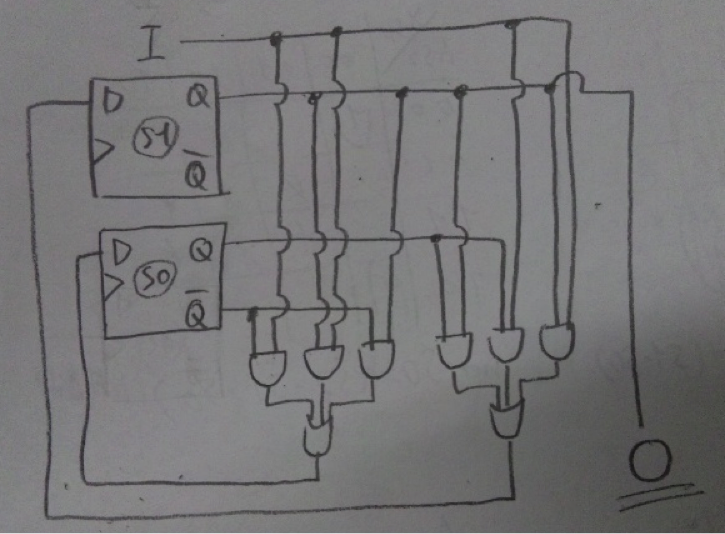

・データハザード
先行命令と後続命令の間にデータ資源の依存関係によって、ストールせざるを得なくなるハザード。フロー依存、出力依存、逆依存が存在し、出力依存と逆依存はレジスタリネーミングによって解消可能。
・遅延分岐
分岐命令の直後に、分岐しようがしまいが必ず実行するような命令郡を置くことで、ストールを防ぐことが可能。分岐先が決まるまで、他の命令をさせておく方法である。
・状態：S1S0
・入力：分岐が成立した場合に１、不成立の場合に０を入力するI
・出力：分岐が成立すると予測する場合に１、不成立と予測する場合に０を出力するO
00,01 → 不成立と予測
10,11 → 成立と予測
真理値表
| I | S1 | S0 | nextS1 | nextS0 | O |
| 0 | 0 | 0 | 0 | 0 | 0 |
| 0 | 0 | 1 | 0 | 0 | 0 |
| 0 | 1 | 0 | 0 | 1 | 1 |
| 0 | 1 | 1 | 1 | 0 | 1 |
| 1 | 0 | 0 | 0 | 1 | 0 |
| 1 | 0 | 1 | 1 | 0 | 0 |
| 1 | 1 | 0 | 1 | 1 | 1 |
| 1 | 1 | 1 | 1 | 1 | 1 |



※IをDFFのクロック入力に入れるのを忘れてた。

状態が01の状態で
成立、不成立、成立、不成立、成立….
というように成立と不成立が交互に発生した場合。
同様に状態が10の状態で、
不成立、成立、不成立、成立、不成立….
という場合。
このように成立と予測する状態と、不成立と予測する状態の間で、交互に予測とは逆であった場合である。